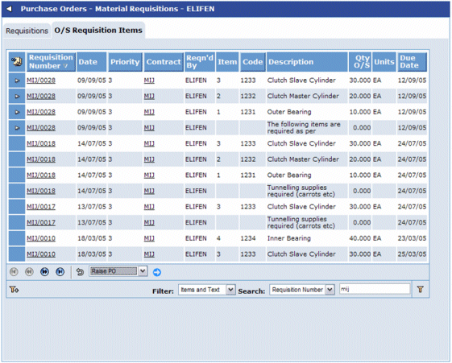
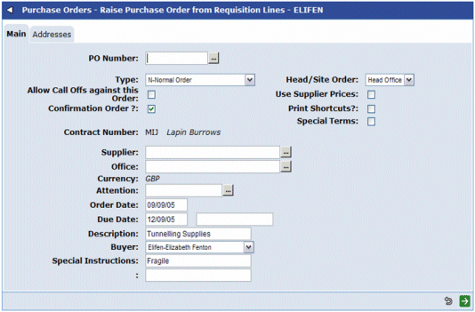
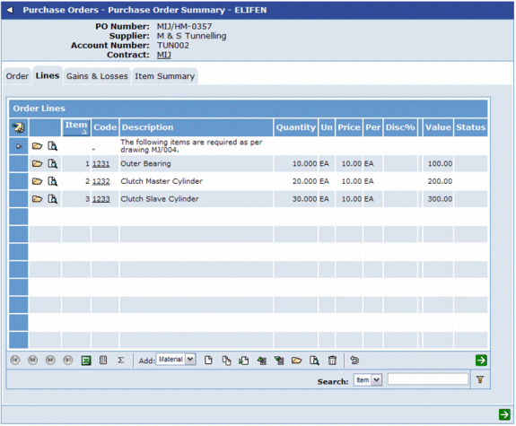

Converting Requisition Lines to a PO
The Outstanding Requisition Items tab shows all unordered Requisition Items.

NOTE
If the PO parameter PORQTXT is set to Y, there will be a "Items and Text" filter available. If this is selected, this will also show text lines from Requisitions, that also have not been brought onto a Purchase Order.
To raise a Purchase Order, select Requisition items (and text if applicable), and select the "Raise PO" action (and press the blue arrow).
This takes you to an Order Header screen. Some of the details are brought across from the Requisition (for example:

Clicking  will auto-generate the PO number (if auto-generating), and will create PO Lines, from the unordered Requisition lines. It will then take you onto the PO Summary, where the newly created PO lines can be updated.
will auto-generate the PO number (if auto-generating), and will create PO Lines, from the unordered Requisition lines. It will then take you onto the PO Summary, where the newly created PO lines can be updated.
In the PO Summary, go to the Lines tab to update these new PO lines:

NOTE
The Price is brought across from the Requisition line if the PO parameter PRPRTOPO is set to Y.
The Quantity can be amended on the Purchase Order, although it cannot be changed to a quantity greater that the quantity on the Requisition.
If the Quantity is reduced from 10 to 6, say, a quantity of 4 will now be outstanding, and will appear on the Outstanding Requisition Items tab, and will be available to be ordered.
NOTES
Deleting a PO line that has been created from a Requisition will mean that the Requisition Item is now unordered, and will be available again to be re-ordered.
When updating these item details, it is possible to update the original Requisition Line's Quantity and Units.